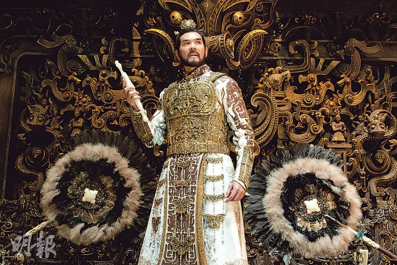
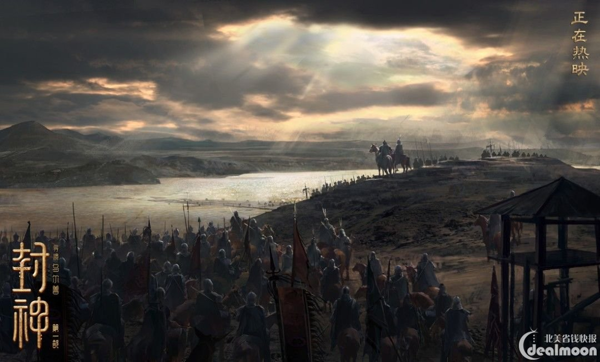
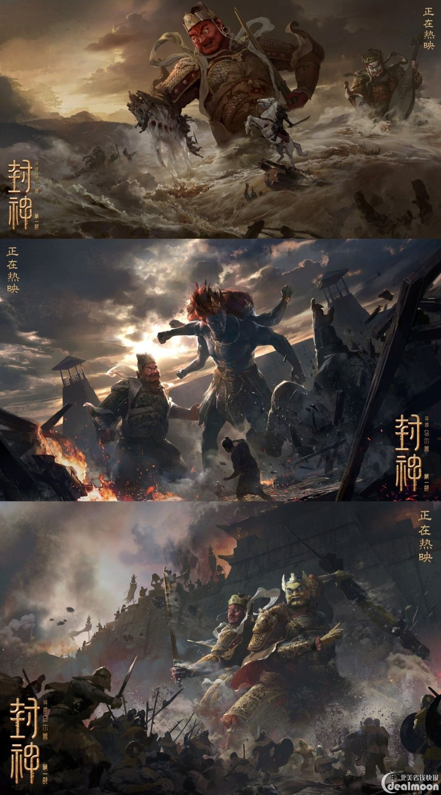

Introduction to Investiture of the Gods
This is the core of the story. The Investiture of the Gods is a list in heaven that records the heroes who died and will be deified. During the war, Jiang Ziya deified the heroes according to their loyalty and contributions and placed them in different priesthoods.
Video Highlights
Epic plot: The film will present the historical background of the end of the Shang Dynasty and the rise of the Zhou Dynasty with a grand narrative, with a compact plot and fierce character conflicts. Shocking visual effects: A large number of advanced visual effects technologies are used to present fantasy scenes such as the battle between gods and demons and the fairyland. Combination of traditional Chinese culture and modern film technology: The film is committed to showing the charm of traditional Chinese culture to the world through the adaptation of classic myths and the combination of modern technical means.
Key Elements
- Investiture of the Gods The Investiture of the Gods is one of the core elements of the story, listing the names of many gods and determining their roles and status. The compilation of the Investiture of the Gods is presided over by Jiang Ziya, and the final result of this list will determine the direction of the entire destiny.
- The Battle of Gods and Demons The battle of gods and demons in the movie is the most interesting part, showing the fierce conflict between various gods, monsters and mortals. The picture is shocking, the special effects are cool, and it shows the huge power comparison between different worlds.
- The spells and immortal tools used by Jiang Ziya and other gods will be an important highlight in the movie. For example, the use of Jiang Ziya's "Seal of the Gods" and other magic weapons will directly affect the direction of the battle.
- The opposition between the immortal world and the human world The relationship between gods and mortals is deeply explored in the movie. The immortal world represents destiny and justice, while the human world is full of humanity and contradictions. Through these elements, the film shows the intricate relationship between humans and gods, demons and immortals.
Theme and meaning
The Investiture of the Gods is not only a story about wars and heroes, but also explores the philosophy of good and evil, loyalty and betrayal, destiny and human power through the description of the fate of the characters. At the same time, the mythological elements in the novel, such as demons, immortal arts, and the Investiture of the Gods, also reflect the ancient Chinese people's worship of gods and their thinking about fate. In general, the Investiture of the Gods combines history, mythology and religious beliefs. It is an important work in ancient Chinese literature that cannot be ignored and has a far-reaching influence.
